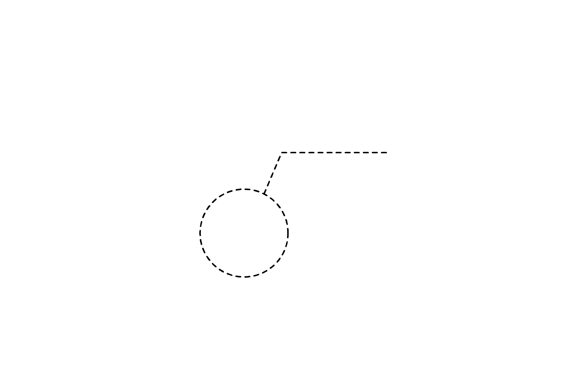
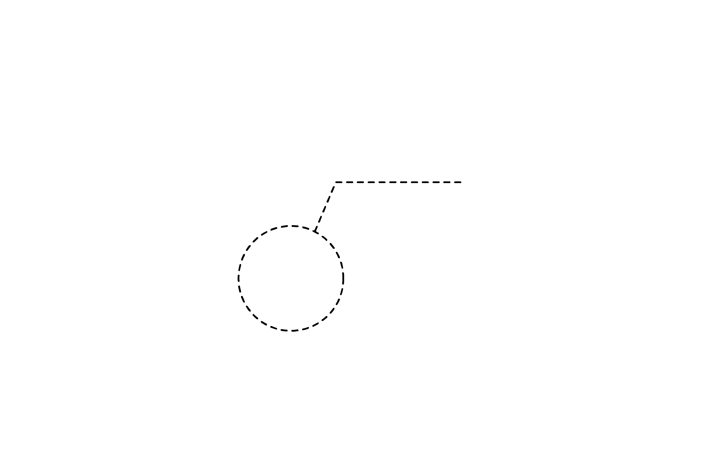

2024
[정류장 이름 레터링, 화랑대역]
지금까지 살았던 지역의 정류장 역들을 레터링한 프로젝트입니다.
‘화랑대역’ 정류장은
앞으로의 추억이 쌓여갈 역이라는 의도를 담아
얇은 선들로 타입을 디자인했습니다.
서울의 지하철을 타는 것조차 설레고
약간은 떨렸던 감정을 담아 레터링했습니다.

 

shape of subway line
shape of subway line